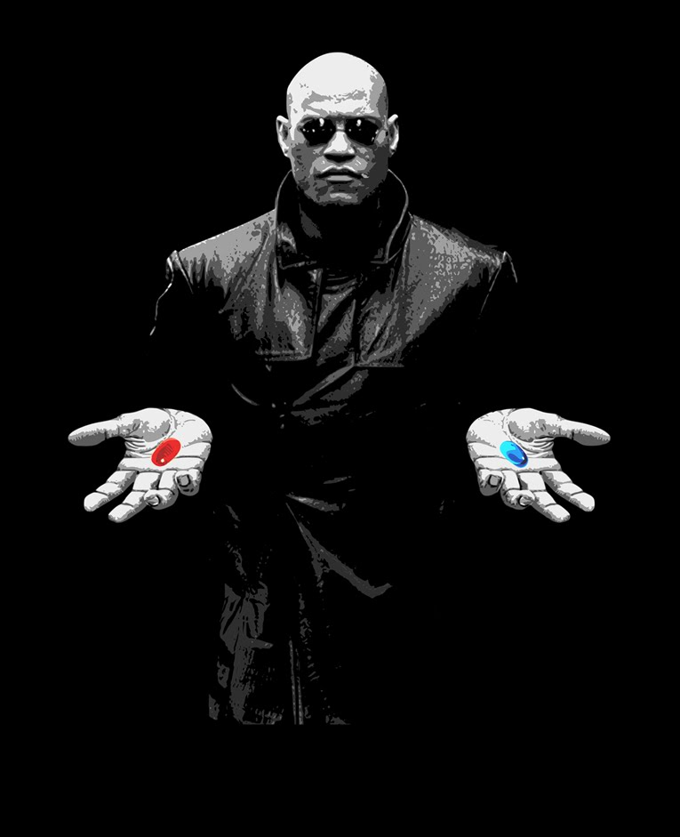
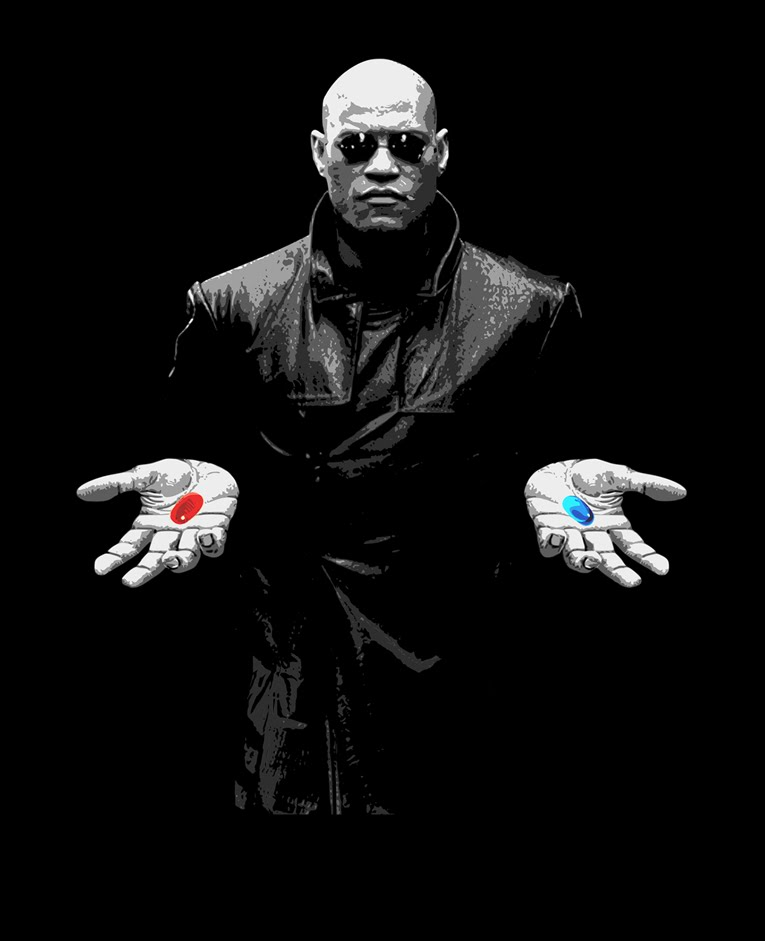
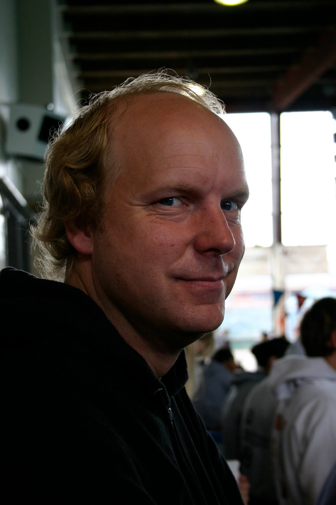

first slide
Programación Extrema, aceptar el cambio
Meetup Rubylit 7 de febrero 2013 
| z, ? | toggle help (this) |
| space, → | next slide |
| shift-space, ← | previous slide |
| d | toggle debug mode |
| ## <ret> | go to slide # |
| c, t | table of contents (vi) |
| f | toggle footer |
| r | reload slides |
| n | toggle notes |
| p | run preshow |
| P | toggle pause |
first slide
Meetup Rubylit 7 de febrero 2013 
Ágil, Eficiente, Bajo riesgo, predecible, científica, divertida.
Disciplina para desarrollar Software
"I always thought that Smalltalk would beat Java, I just didn’t know that it would be called" ‘Ruby’ when it did. — Kent Beck

Todas las practicas de sentido común al extremo
Revisiones de código todo el tiempo, Testear todo el tiempo incluso con el cliente, El diseño como ocupación diaria de todos, La cosa más sencilla que pueda llegar a funcionar, Todos refinaran la arquitectura todo el tiempo.
Trabajar en cosas que realmente importan, cada día. No van a enfrentar situaciones aterradoras solos. Van a provechar todas sus energías para que su sistema tenga éxito. Tomarán las decisiones que puedan tomar mejor
En resúmen XP promete reducir el riesgo del proyecto, mejorando la sensibilidad a los cambios del negocio, mejorando la productividad a lo largo de la vida del sistema; y añade diversión a la construcción de software en equipo --todo al mismo--.Es cierto. No se ría. Ahora van a tener que escuchar el resto de la charla para ver si estoy Loco
Ahora van a tener que escuchar el resto de la charla para ver si estoy loco.
El desarrollo de software fracasa en la entrega y en la entrega de valor.
Crece exponencialmente con el tiempo
Tecnología + Prácticas de codificación = Curva ** -1
sin elementos extras, es decir sin ideas que no vamos a usar ahora pero que esperamos usar en el futuro.
con ellas tendremos la confianza en que conoceremos si cambiamos accidentalmente el comportamiento del sistema.
de tal forma que cuando vienen los tiempos de cambio al sistema, no tendremos miedo al tratarlos.
Achatamiento de la curva del costo de desarrollo
A veces un programador no le dice a otro algún cambio crítico en el diseño del sistema.
A veces un programador no hace al cliente la pregunta adecuada
hacen que programadores, clientes y directores se tengan que comunicar.
La sencillez no es fácil. Una de las cosas más difíciles del mundo es no mirar lo que necesitarás implementar mañana, la próxima semana y el próximo mes.
"No me preguntes a mí, pregúntale al sistema"
"¿Has escrito los casos de prueba para esto?"
"El caucho tiene que tocar el asfalto"
Hay que poner las historias más importantes en producción tan pronto como sea posible.
El desarrollo es un estado temporal del sistema, este necesita cobrar vida propia
Cualquier cosa que no pueda ser medida no existe. Las características de software que no puedan ser demostradas mediante pruebas automatizadas, simplemente no existen.
Las pruebas automatizadas mantienen el el programa vivo más tiempo, cuando las tienes puedes hacer más cambios duramente más tiempo.
Es más divertido programar con tests que sin ellos. Te dan más confianza. Es lindo ver que todo está verde.